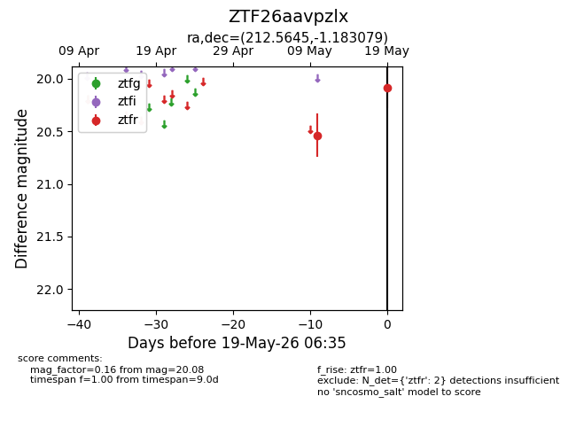
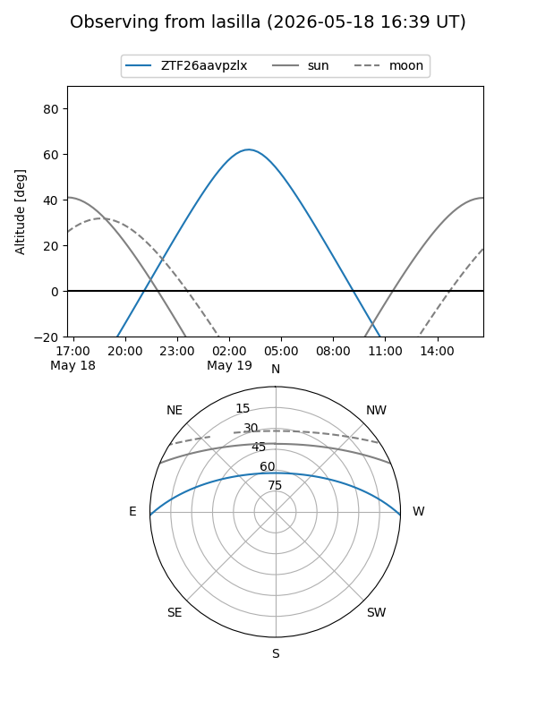
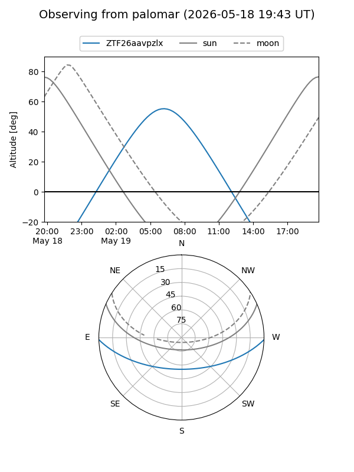

ZTF26aavpzlx
Target ZTF26aavpzlx at 2026-05-19 06:37
Aliases and brokers:
FINK: link
Lasair: link
ALeRCE: link
alt names
ZTF26aavpzlx (ztf,fink_ztf)
Coordinates:
equatorial (ra, dec) = 212.5645,-1.18308
equatorial (HMS+DMS) = 14:10:15.48,-01:10:59.08
galactic (l, b) = (339.9189,+55.92224)
Flags:
Photometry:
last ztfr=20.08
2 ztfr detections
Lightcurve

Visibility


Additional plots